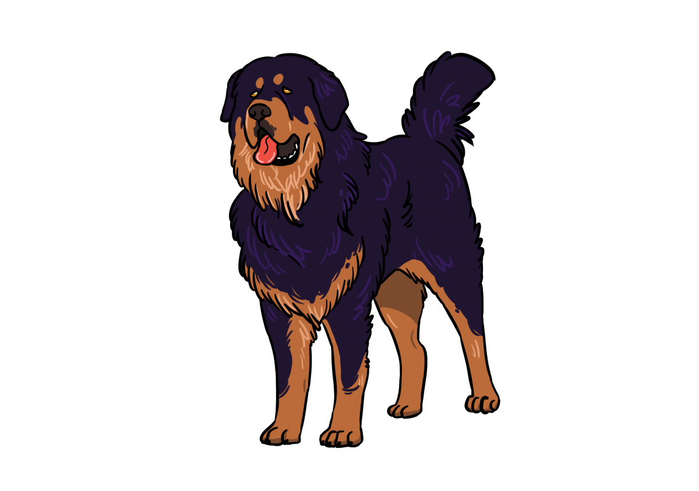
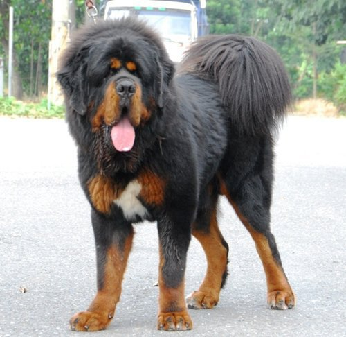
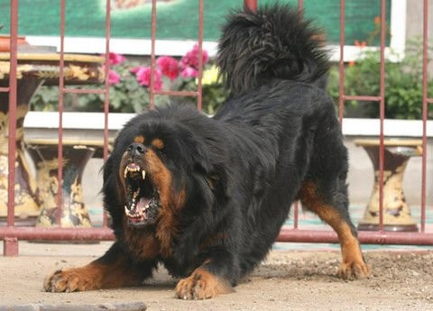
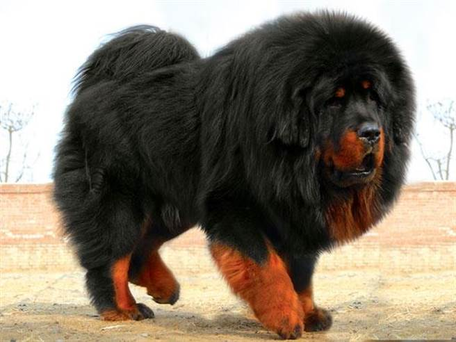

西藏獒犬

外表
藏獒擁有一身厚重濃密的皮毛，身形高壯，肌肉厚實強壯，四肢與軀幹結實且充滿力量，長尾巴會高舉或者朝向某一側彎曲，還有一雙琥珀黑的眼睛，眼神銳利。
性格
雖然獒犬是很忠心的狗兒，記憶力也好，但仍屬獸性較強的狗兒，若能自幼犬二至六個月時飼養較好，人與狗之間彼此愈早了解對方愈好，並且要給予嚴格的教育指導，好讓牠們習慣規矩。獒犬有保衛整個村落地區的作用，除了建築物的保護，就連所有的婦幼人員以及牲畜，牠們也都會愛屋及烏一起守護。遇到緊急情況時，牠們能獨自驅離在附近徘迴的人事物，非常強橫勇敢。
歷史
藏獒最早的文獻記載來自於馬可波羅的遊記，在遊記中描述：「藏人的狗有驢子那般大，極為強健而兇猛，可以獵取一切野獸，特別是獵取氂牛。」1744年，英國特使喬治·波格爾（George Bogle）到西藏，在回憶中記錄：「西藏狗體型巨大，似雄獅般而且勇敢。」[2]1847年，印度總督哈丁爵士，送了一隻藏獒給維多利亞女王。1873年，英國犬協會（Kennel Club）正式稱「來自西藏的大狗」為「西藏馬士提夫」（Tibetan mastiff）。是年，威爾斯王子又帶入兩隻藏獒，1928年之前只有少量藏獒被進口到英國和歐洲等地。
飼養注意事項
食量及運動量都非常大，需確定有足夠的飼養空間和伙食經費
居住環境要以冬暖夏涼為主
毛量豐厚，需每天梳毛
活動量很大，需要經常帶牠散步或到廣闊的場地運動
對陌生人有很大的敵意、極度不信任，需小心應對
需花時間去跟牠相處、馴服，當牠們接受你時，是很溫馴且像小孩一樣，對你是絕對忠心
幼犬的生長階段，可能因紫外線照射不足、或維生素D攝取不足，影響鈣的吸收和骨鹽的沉積，便容易患有佝僂病


